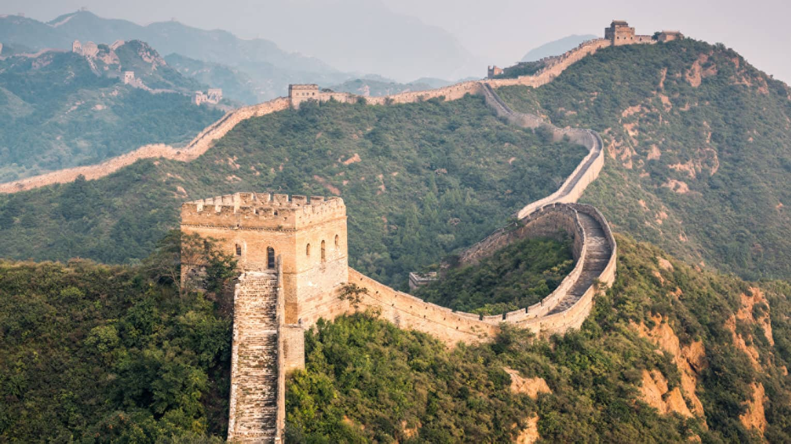

| |  |
The Great Wall of China is a series of fortifications that were built across the historical northern borders of ancient Chinese states and Imperial China as protection against various nomadic groups from the Eurasian Steppe. Several walls were built from as early as the 7th century BC, with selective stretches later joined together by Qin Shi Huang (220–206 BC), the first emperor of China. Little of the Qin wall remains. Later on, many successive dynasties built and maintained multiple stretches of border walls. The most well-known sections of the wall were built by the Ming dynasty (1368–1644).
Apart from defense, other purposes of the Great Wall have included border controls, allowing the imposition of duties on goods transported along the Silk Road, regulation or encouragement of trade and the control of immigration and emigration. Furthermore, the defensive characteristics of the Great Wall were enhanced by the construction of watchtowers, troop barracks, garrison stations, signaling capabilities through the means of smoke or fire, and the fact that the path of the Great Wall also served as a transportation corridor.
The frontier walls built by different dynasties have multiple courses. Collectively, they stretch from Liaodong in the east to Lop Lake in the west, from the present-day Sino–Russian border in the north to Tao River (Taohe) in the south; along an arc that roughly delineates the edge of the Mongolian steppe; spanning over 20,000 km in total. Today, the defensive system of the Great Wall is generally recognized as one of the most impressive architectural feats in history.